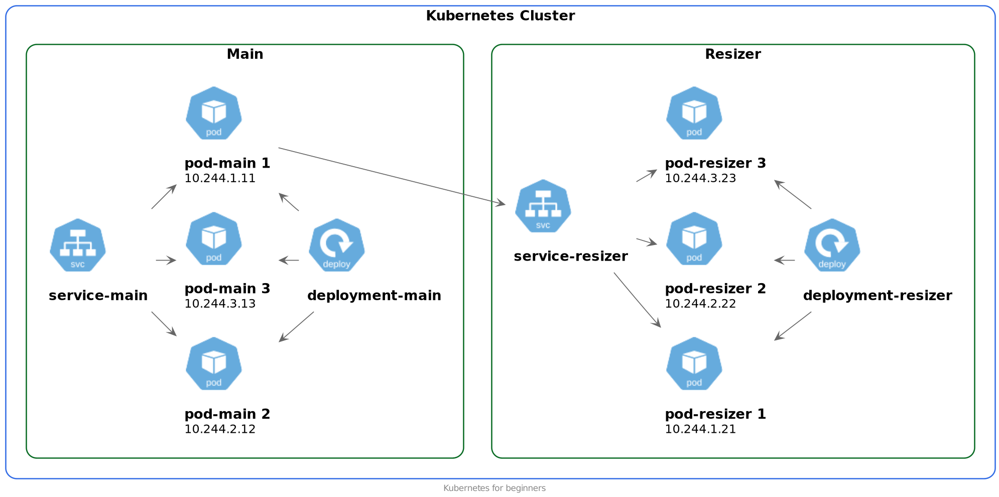

Зачем нужен Kubernetes
- Выполнения полезной работы
- Распределение нагрузки между отдельными серверами
- Обеспечение доступа к переработанным данным снаружи кластера *
Замечание
- Все объекты Kubernetes описываются манифестами
- Важно понимать разницу между объектом и его описанием
- Объекты создаются в соответствии с описанием
Полезная нагрузка
Контейнер
- Docker популяризовал идею контейнеров
- Контейнеры предназначены для изолированного запуска полезной нагрузки
- В Kubernetes появляется понятие Pod
- Pod похож на контейнер, но это больше чем контейнер
Pod
- Pod предназначен для выполнения вычислений (полезной работы)
- Pod в переводе с английского означает стручок, капсула. Стручок как известно содержит несколько бобов.
Pod
- Очень упрощенно pod - это один или несколько контейнеров
- Зачем нужно несколько контейнеров в одном поде?
- Это мы обсудим позже
Схема Pod

Pod
# Под завершает свою работу едва стартовав
kubectl -n default run alpine --image=alpine
# Под завершит свою работу через 30 секунд
kubectl -n default run alpine2 --image=alpine -- sleep 30
Pod
- В контейнере обязательно должен быть запущен процесс
- Pod, как и контейнер временные по своей природе
- Поды могут создаваться и уничтожаться в любой момент времени
- Приложение внутри пода должно быть готово к этому
Проблемы Pod-ов
- Временная природа
- Масштабирование
- Версионирование
- Для решения этой проблемы создан объект Deployment
Deployment
Назначение Deployment
- Автоматический запуск подов
- Масштабирование
- Версионирование
Назначение Deployment
На самом деле этим занимается kube-controller-manager
Но для простоты можно пока опустить эту деталь
Схема Deployment

Сеть
Сеть
- Полезная работа выполняется в подах
- Deployment контролирует заданное количество подов
- Достаточно ли этого для функционирования наших приложений?
Сеть
Для пода почти всегда требуются какие-то внешние ресурсы
- БД
- Кэш
- Внутренний ресурс
- Внешний ресурс
Пример

Проблемы сетевого взаимодействия
- Нельзя обращаться по имени. Оно меняется
- Можно обращаться по IP
- Как узнать IP?
- IP меняется
- Не обеспечивается распределение нагрузки между подами
Service
- Service по заданным правилам находит поды
- Service направляет трафик к поду
- Service распределяет трафик между подами
Схема с объектом Service
Service решил проблемы сетевого взаимодействия
- К подам можно обращаться по имени сервиса
- IP сервиса не меняется
- Распределяется нагрузка между подами
- Можно обеспечить доступ за пределы кластера (наружу)
- Можно обеспечить доступ из-за пределов кластера (внутрь)
Service
- Работает на 4 уровне OSI
- Для http, https нужно использовать 7 уровень OSI
Сеть
Что вы знаете для работы на 7 уровне OSI?
Ingress
Схема с объектом Ingress

Что такое Ingress?
Для простоты можно говорить, что трафик в кластер Kubernetes по http(https) попадает через Ingress
- Работает на 7 уровне OSI
Ingress
- Работает на 7 уровне OSI
- Это конфиг для ingress controller
Ingress controller
- Работает на 7 уровне OSI
Ingress controller
- Работает на 7 уровне OSI
- Собирает общий конфиг Proxy из конфигов Ingress
Proxy
- Работает на 7 уровне OSI
Для простоты можно говорить, что трафик в кластер Kubernetes по http(https) попадает через Ingress
Схема с объектом Ingress
Финальная схема

Итоги
Pod
Pod - это набор контейнеров. Служит для выполнения вычислений. Внутри пода выполняется вся основная работа.
Deployment
Deployment - объект, который запускает необходимое количество подов. Служит для обеспечения отказоустойчивости и масштабирования вашего приложения.
Service
Service - обеспечивает сетевую связанность между приложениями в кластере. Может вести наружу кластера и внутрь кластера.
Ingress
Ingress - обеспечивает доступ внутрь кластера по URL.